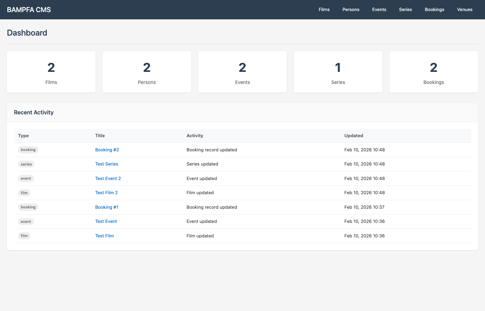
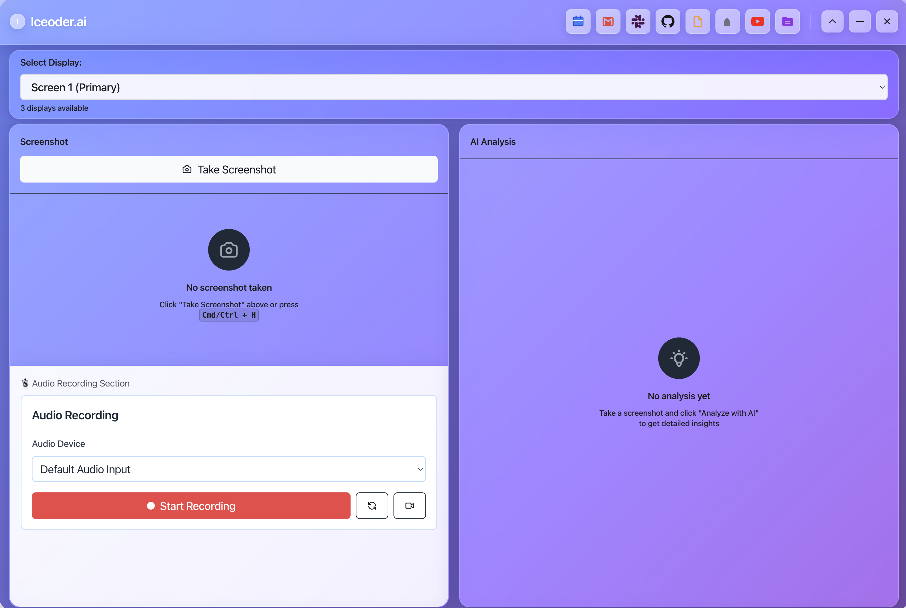

Principal Data & AI Architect | 18+ Years | Silicon Valley
Question inherited constraints. Optimize for simplicity. Prove necessity before adding complexity.
I build tools, not just use them. Custom frameworks, automation systems, and platforms from scratch.
Every project ships. 90% accuracy trading systems, 95% cost reduction automation, real users.
GPT-4 Vision, RAG pipelines, multi-agent systems, LLM orchestration - building the future of AI.
13 production systems organized into 5 categories
Production data systems for enterprise and museum clients

Comprehensive database architecture and CMS replacing outdated Drupal 7 system for BAMPFA.
Database Modernization for Berkeley Art Museum
Comprehensive CMS and database architecture unifying 3 legacy systems (FileMaker, CollectionSpace, Tessitura) into scalable PostgreSQL platform. Complete content workflows, audit trails, and role-based access.
Intelligent database validation tool with 4 matching modes.
Multi-platform database validation with 4 modes: Exact Match, Selective, DQ Rules, Adaptive. Supports Oracle, Databricks, Snowflake, PostgreSQL.
Talks to Unity Catalog, generates safe SQL, executes against the right warehouse, returns results — without leaving Claude.
Natural-language SQL agent for Databricks. Reads Unity Catalog schema, generates safe SQL, runs against the right warehouse, returns results — all without leaving the chat.
Aggregates used car listings from 7+ platforms (Cars24, OLX, Spinny, CarDekho, CarWale, CarTrade, Facebook) into one unified search.
Your Personal Car-Finding Agent
Full-stack marketplace aggregating every used car in India. Multi-source scraping from Cars24, OLX, Spinny, CarDekho, CarWale, CarTrade with AI-powered car finder.
Daily-use tools so AI works for me, not the other way around
Two NVIDIA DGX Spark nodes (GB10, 128 GB each) linked at 200 Gb/s, serving vLLM + Ray at tensor-parallel = 2 with NVFP4 — agent-ready, fully on-prem.
A two-node GB10 cluster on 200 Gb fabric running distributed vLLM + Ray inference — capable models, agent tool-use, zero data leaving the LAN. Owning the inference layer instead of metering it.
Mobile voice notes routed by Claude into project-aware action items, synced across 4 machines, installable as a PWA on iPhone.
A personal life-OS — mobile-first dashboard, Claude-orchestrated notes routing, daily backup + Claude conversation knowledge base export. Pull-based architecture across a VPS, a private Mac, and a sync layer.
Plaud voice recorder → AI transcription → Claude classification → project folder routing, no human in the loop.
A pipeline that turns my Plaud voice recordings into routed, project-tagged action items via Claude. Dual-path sync, 15-min cron, no human in the loop.
A persistent file-based memory system, custom CLI wrappers, and educational templates that make Claude remember and integrate across my work.
Persistent file-based memory, custom CLI tooling, and an education layer built on top of Claude — so it remembers, integrates, and scales across my work.

Comprehensive desktop app combining screenshot analysis, live transcription, and productivity integrations.
AI-Powered Productivity Suite
Unified workspace with 5-icon toolbar: Screenshot analysis with GPT-4 Vision, real-time transcription with interview coaching, YouTube AI analysis, Google Calendar sync, and Notion-integrated notes.
Browser-driven AI workflows
An optimized fork of browser-use plus a custom devtools layer for inspecting LLM-driven browser sessions.
An optimized fork of browser-use plus a custom devtools layer for inspecting LLM-driven browser sessions. Token-optimized, multi-provider.
Real-time market prediction
Comprehensive trading analysis with 90% accuracy on 20+ point moves.
Real-time S&P 500 prediction system with 90% accuracy on 20+ point moves. Multi-LLM support, triple barrier labeling, automated analysis.
Audio, video, and content processing
Voice cloning system using only the target speaker's actual voice samples.
Voice cloning using concatenative synthesis. Speaker identification, voice separation, word library of 306 unique words from source audio.
Three integrated tools for YouTube content analysis and summarization.
Comprehensive YouTube analysis: transcript extraction, AI summaries with GPT-4, word cloud visualization, sentiment analysis, action items.
TubeBrain, Moltbot, PDF Form Filler, Defender, WhatsApp Summarizer, YouTube News Feed — LLM + targeted I/O + minimal infra.
Six small AI utilities that solve one problem each — bundled because they share an architecture: LLM + targeted I/O + minimal infra.
Everything used across the 15 projects above
Interested in AI systems, data platforms, or collaboration opportunities?